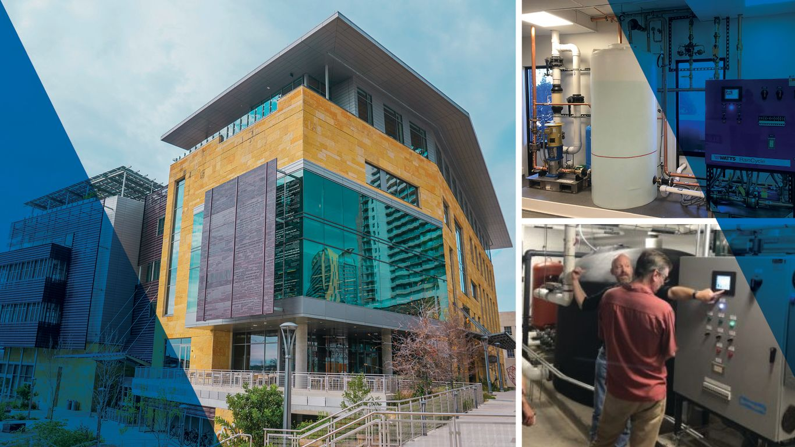
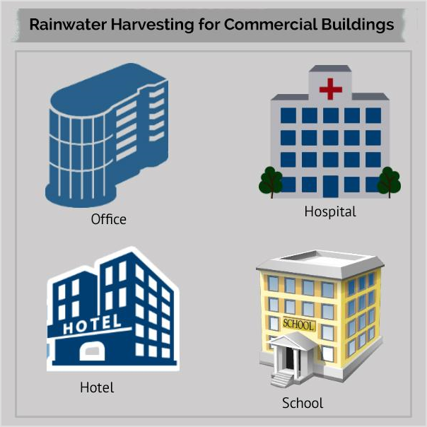
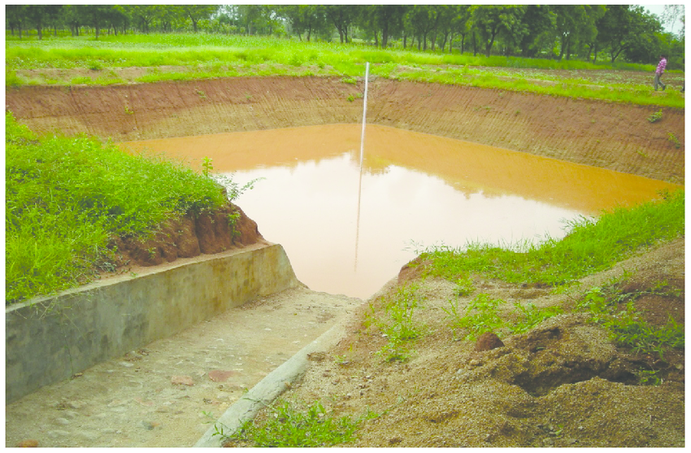
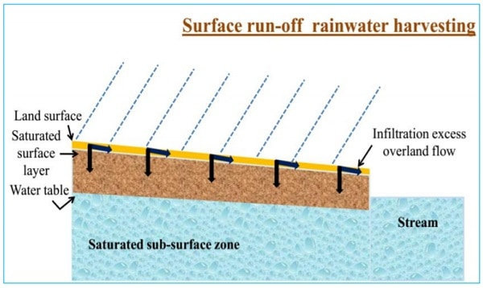

Rainwater harvesting is not only for residential applications, water
needs in commercial and industrial processes can cost thousands of
dollars a year, not only that, but rainwater harvesting helps new
construction comply with stormwater regulations in retaining stormwater.
As the population grows, cities and suburbs expand with more buildings
and so the demand for water continues to increase. The installation of a
rainwater collection system is becoming increasingly important for
businesses and commercial organizations. Rainwater Harvesting is
the first solution in a water management strategy for commercial, public
and residential buildings.

If you have a commercial property then you can save millions of gallons
of drinking water each year with an eco-friendly approach known as
Rainwater Harvesting. If you are looking for relevant information
on Rainwater Harvesting then you are at the right place to get
it. Rainwater collection system is a very cost-effective solution that
brings great benefits to commercial buildings such as: office buildings,
schools, hotels, resorts, hospitals, homes. goods, etc.

RWH: An effective solution for commercial users
RWH systems are gradually becoming part of
sustainable water management and rainwater extraction is also
gaining popularity leading to ecological conservation. Most
commercial buildings use a significant amount of water and energy in
their daily operations. Therefore, a rainwater harvesting system for
commercial buildings will significantly reduce the amount of water
used from the grid.
For better understanding, lets have a look at its methods.
Majorly, there are two Rainwater Harvesting methods as follows:
1. Surface Runoff Rainwater Harvesting
RWH using ground or land surface catchment areas is less complex way of
collecting rainwater. This technique is mainly suitable for storing
water for agricultural purposes.

Surface Runoff Rainwater Harvesting is a method of collecting
rainwater flowing along the ground during the rains will be collected to
a tank below the surface of the ground for irrigation and other
purposes. During storage of rainwater, it is important to incorporate
efficient and effective water conservation methods i.e. by reducing
evaporation. It is a very easy to adopt technology and very profitable
if used accordingly. The main objective of surface runoff rainwater
harvesting method is to meet the ever increasing demand of water, to
reduce water pollution, soil erosion and flooding of roads.

Pros:
Help solving the water crisis
to some extent.
Reduce the runoff volume to
great extent inside the city area.
Reduction of Flood
2. Roof Top Rainwater Harvesting
Commercial buidings are usually limited by area more than residential
buildings, no system is more suitable than a wet system for Rooftop
Rainwater Harvesting. All collected rainwater will run straight down,
stored in an underground system for future uses.

Roof Top Rainwater Harvesting is a method of collecting rain
water where it falls and in which rain water is captured from the roof
catchments of domestic houses or commercial buildings and stored in
the tanks. Harvested rain water can either be stored in a tank or
diverted to artificial recharge system to meet the
household/commercial needs through storage in tanks. This method is
simple, eco-friendly, less expensive and truly effective. Roof-top
rainwater harvesting method (RRH) involves diverting and recharging
(or) storing rainwater that falls on the roof of a house/building. The
main objective of rooftop rain water harvesting is to make water
available for future use, to improve quality of ground water and etc.

Pros:
Provides self-sufficiency to
water supply.
Provides high-quality water
that is soft and low in minerals.
Reduces soil erosion in urban
and rural areas.